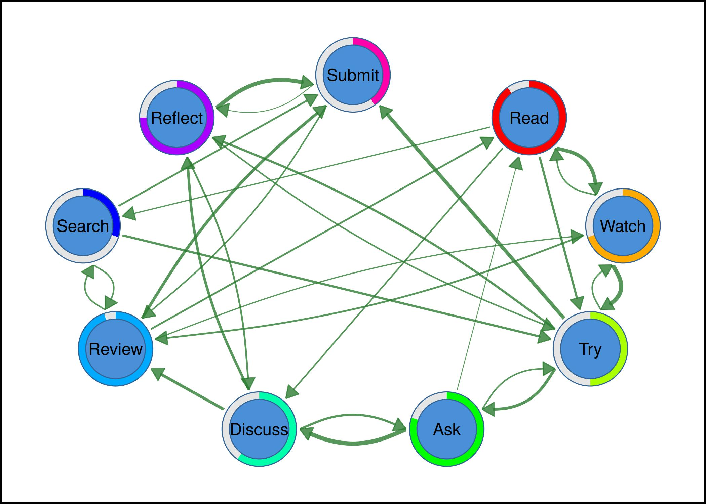
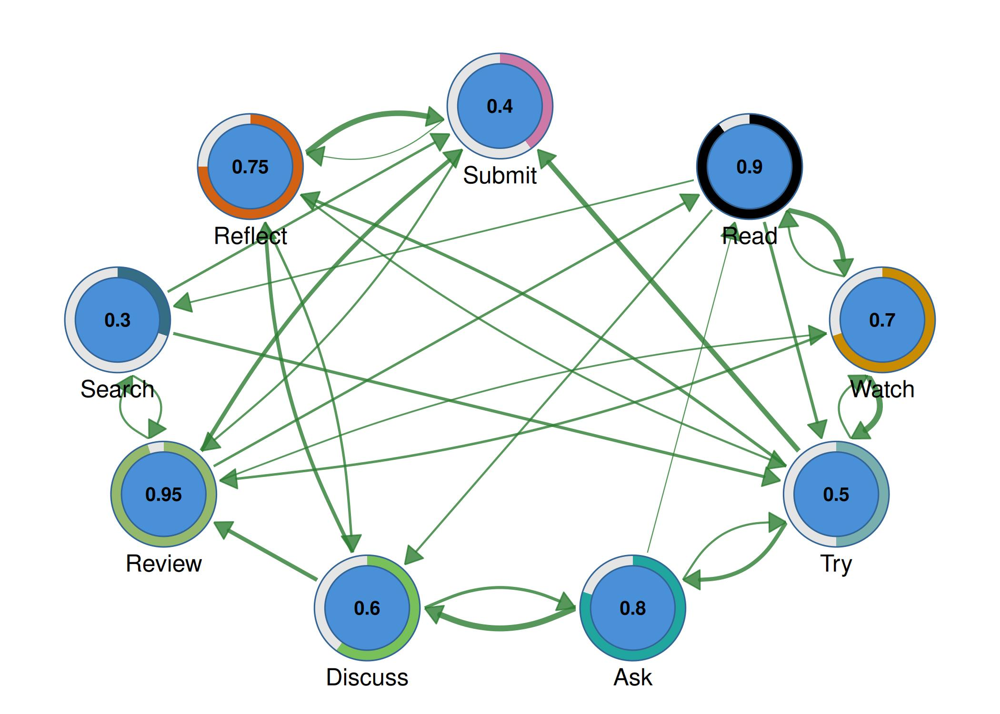
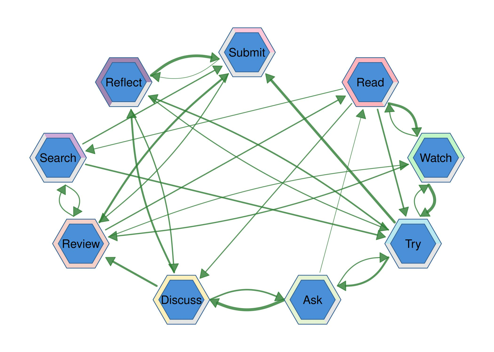
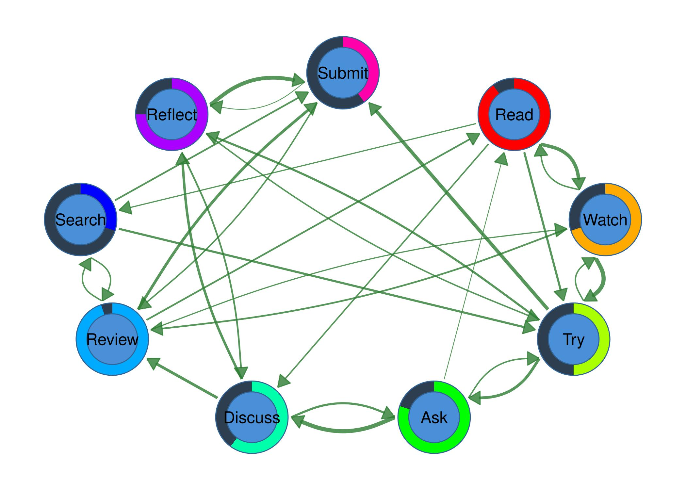
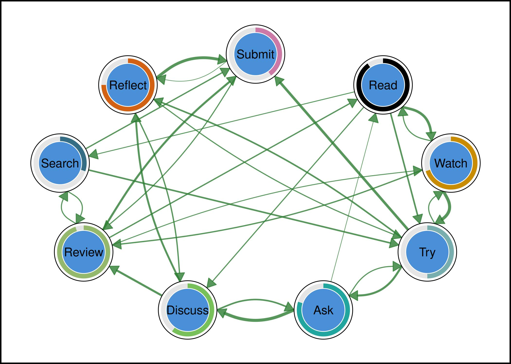
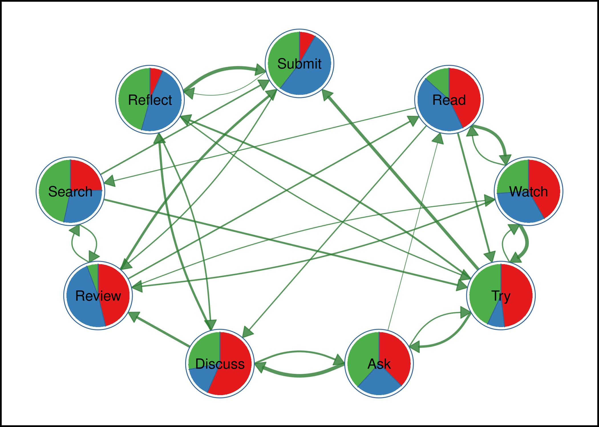
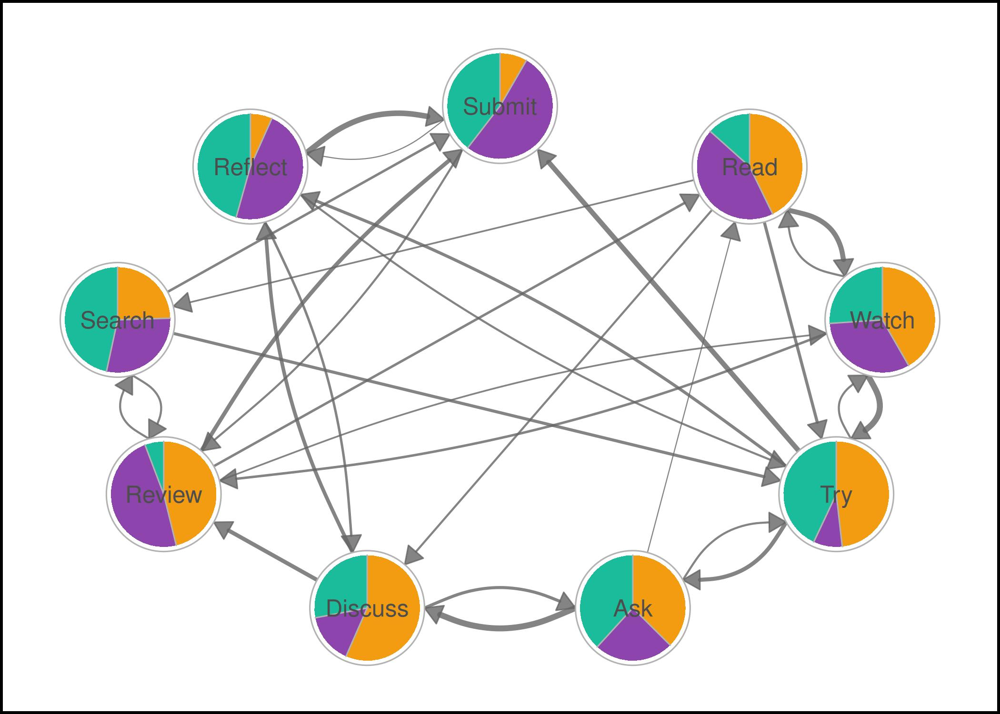
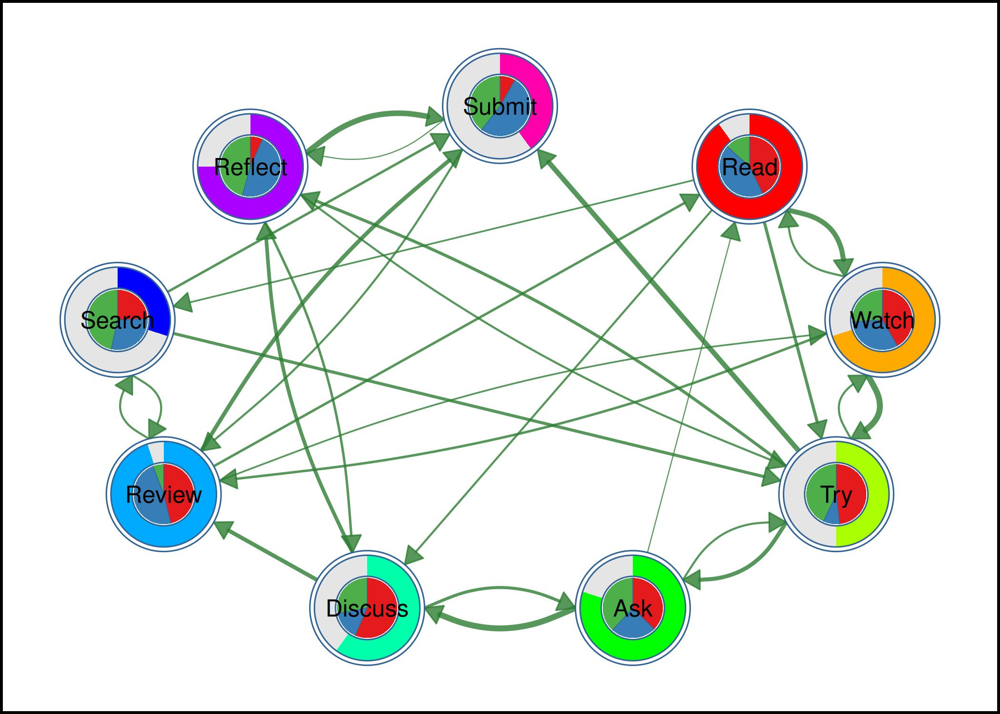
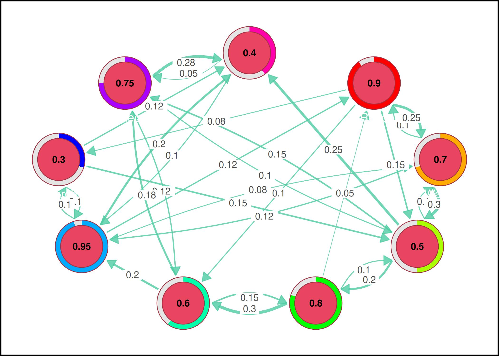
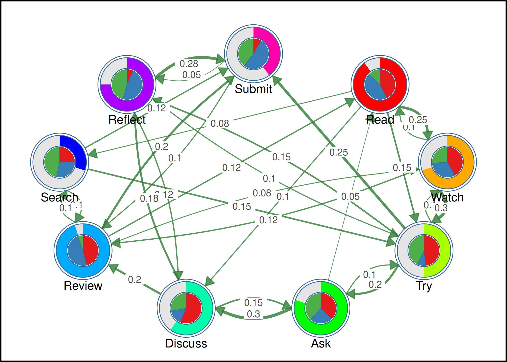

This vignette shows how to use pie chart and donut (ring) nodes in
cograph to display additional data dimensions on each
node.
Create a transition matrix
states <- c("Read", "Watch", "Try", "Ask", "Discuss",
"Review", "Search", "Reflect", "Submit")
mat <- matrix(c(
0.00, 0.25, 0.15, 0.00, 0.10, 0.00, 0.08, 0.00, 0.00,
0.10, 0.00, 0.30, 0.00, 0.00, 0.12, 0.00, 0.00, 0.00,
0.00, 0.10, 0.00, 0.20, 0.00, 0.00, 0.00, 0.15, 0.25,
0.05, 0.00, 0.10, 0.00, 0.30, 0.00, 0.00, 0.00, 0.00,
0.00, 0.00, 0.00, 0.15, 0.00, 0.20, 0.00, 0.18, 0.00,
0.12, 0.08, 0.00, 0.00, 0.00, 0.00, 0.10, 0.00, 0.20,
0.00, 0.00, 0.15, 0.00, 0.00, 0.10, 0.00, 0.00, 0.12,
0.00, 0.00, 0.10, 0.00, 0.12, 0.00, 0.00, 0.00, 0.28,
0.00, 0.00, 0.00, 0.00, 0.00, 0.10, 0.00, 0.05, 0.00
), nrow = 9, byrow = TRUE, dimnames = list(states, states))Example 1: Simple donut nodes
Use donut_fill with values between 0 and 1 to show a
progress ring on each node.

Example 2: Donut with custom colors
splot(mat, node_size = 9,
donut_fill = c(0.9, 0.7, 0.5, 0.8, 0.6, 0.95, 0.3, 0.75, 0.4),
donut_color = palette_rainbow(9))
Example 3: Donut with values displayed
splot(mat, node_size = 9,
donut_fill = c(0.9, 0.7, 0.5, 0.8, 0.6, 0.95, 0.3, 0.75, 0.4),
donut_color = palette_colorblind(9),
donut_show_value = TRUE,
donut_value_digits = 2,
label_position = "below")
Example 4: Donut shapes
splot(mat, node_size = 9,
donut_fill = c(0.9, 0.7, 0.5, 0.8, 0.6, 0.95, 0.3, 0.75, 0.4),
donut_color = palette_pastel(9),
donut_shape = "hexagon")
Example 5: Donut background and inner ratio
splot(mat, node_size = 9,
donut_fill = c(0.9, 0.7, 0.5, 0.8, 0.6, 0.95, 0.3, 0.75, 0.4),
donut_color = palette_rainbow(9),
donut_bg_color = "#2C3E50",
donut_inner_ratio = 0.7)
Example 6: Donut borders
splot(mat, node_size = 9,
donut_fill = c(0.9, 0.7, 0.5, 0.8, 0.6, 0.95, 0.3, 0.75, 0.4),
donut_color = palette_colorblind(9),
donut_border_color = "white",
donut_outer_border_color = "black")
Example 7: Pie chart nodes
Use pie_values to divide each node into colored
segments.
set.seed(42)
pie_vals <- lapply(1:9, function(i) {
v <- runif(3)
v / sum(v)
})
splot(mat, node_size = 9,
pie_values = pie_vals,
pie_colors = rep(list(c("#E41A1C", "#377EB8", "#4DAF4A")), 9))
Example 8: Pie with custom colors per node
splot(mat, node_size = 9,
pie_values = pie_vals,
pie_colors = rep(list(c("#F39C12", "#8E44AD", "#1ABC9C")), 9),
theme = "minimal")
Example 9: Donut + Pie combination
Outer donut ring shows progress, inner pie shows category breakdown.
splot(mat, node_size = 9,
donut_fill = c(0.9, 0.7, 0.5, 0.8, 0.6, 0.95, 0.3, 0.75, 0.4),
donut_color = palette_rainbow(9),
donut_inner_ratio = 0.6,
pie_values = pie_vals,
pie_colors = rep(list(c("#E41A1C", "#377EB8", "#4DAF4A")), 9))
Example 10: With edge labels and dark theme
splot(mat, node_size = 9,
donut_fill = c(0.9, 0.7, 0.5, 0.8, 0.6, 0.95, 0.3, 0.75, 0.4),
donut_color = palette_rainbow(9),
donut_show_value = TRUE,
donut_value_digits = 2,
edge_labels = TRUE,
label_position = "below",
theme = "dark")
Example 11: Donut + Pie + values combined
splot(mat, node_size = 9,
donut_fill = c(0.9, 0.7, 0.5, 0.8, 0.6, 0.95, 0.3, 0.75, 0.4),
donut_color = palette_rainbow(9),
donut_inner_ratio = 0.6,
donut_show_value = TRUE,
donut_value_digits = 2,
donut_border_color = "white",
donut_outer_border_color = "black",
pie_values = pie_vals,
pie_colors = rep(list(c("#E41A1C", "#377EB8", "#4DAF4A")), 9),
label_position = "below",
edge_labels = TRUE)